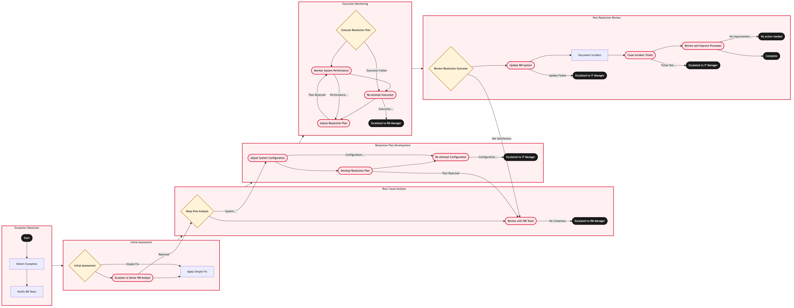

Updated 2026-08-20
RM System Exception and Alert Handling
Process flow
Click to zoom

Process steps
▼
Phase 1 — Exception Detection
2 steps
| Step | Activity | Role | System | Input | Output | KPI | Dec | Exc | Pain point |
|---|---|---|---|---|---|---|---|---|---|
| 1.1 | Detect Exception | YYZ Operations Control Duty Manager | PROS Revenue ManagementB | System logs and alerts | Exception report | Time to detection < 5 minutes | N | N | Delays in exception detection can lead to prolonged system downtime. |
| 1.2 | Notify RM Team | YYZ Operations Control Duty Manager | Email/Instant Messaging SystemU | Exception report | Notification sent to RM team | Time to notification < 1 minute | N | N | Manual error in notification can lead to delayed response times. |
▼
Phase 2 — Initial Assessment
3 steps
| Step | Activity | Role | System | Input | Output | KPI | Dec | Exc | Pain point |
|---|---|---|---|---|---|---|---|---|---|
| 2.1 | Initial Assessment | RM Adjudicator | PROS Revenue ManagementB | Exception report | Preliminary analysis and categorization of the exception | Time to initial assessment < 10 minutes | Y | N | Complex exceptions may require extensive manual review. |
| 2.2 | Escalate to Senior RM Analyst | RM Adjudicator | Email/Instant Messaging SystemU | Preliminary analysis | Escalation notification sent | Time to escalation < 2 minutes | N | Y | Senior analysts may be unavailable, causing delays. |
| 2.3 | Apply Simple Fix | RM Adjudicator | PROS Revenue ManagementB | Preliminary analysis | Exception resolved | Time to fix < 5 minutes | N | N | Incorrect fixes can cause further exceptions. |
▼
Phase 3 — Root Cause Analysis
2 steps
| Step | Activity | Role | System | Input | Output | KPI | Dec | Exc | Pain point |
|---|---|---|---|---|---|---|---|---|---|
| 3.1 | Deep Dive Analysis | Senior RM Analyst | PROS Revenue ManagementB | Escalation notification | Root cause analysis report | Time to deep dive < 30 minutes | Y | N | Deep dives may require access to multiple systems and data sources. |
| 3.2 | Review with RM Team | Senior RM Analyst | Email/Instant Messaging SystemU | Root cause analysis report | Team consensus on resolution plan | Time to review < 10 minutes | N | Y | Disagreements in the team can delay decision-making. |
▼
Phase 4 — Resolution Plan Development
3 steps
| Step | Activity | Role | System | Input | Output | KPI | Dec | Exc | Pain point |
|---|---|---|---|---|---|---|---|---|---|
| 4.1 | Adjust System Configuration | IT Support Analyst | PROS Revenue ManagementB | Root cause analysis report | System configuration adjusted | Time to adjustment < 20 minutes | N | Y | Incorrect adjustments can lead to new exceptions. |
| 4.2 | Develop Resolution Plan | Senior RM Analyst | Email/Instant Messaging SystemU | Team consensus | Resolution plan document | Time to develop plan < 15 minutes | N | Y | Complex plans may require iterative refinement. |
| 4.3 | Re-attempt Configuration | IT Support Analyst | PROS Revenue ManagementB | Root cause analysis report | System configuration adjusted | Time to re-attempt < 20 minutes | N | Y | Multiple retries can strain system resources. |
▼
Phase 5 — Execution & Monitoring
4 steps
| Step | Activity | Role | System | Input | Output | KPI | Dec | Exc | Pain point |
|---|---|---|---|---|---|---|---|---|---|
| 5.1 | Execute Resolution Plan | RM Adjudicator | PROS Revenue ManagementB | Resolution plan document | Exception resolved | Time to execution < 30 minutes | Y | N | Manual steps in the plan can introduce errors. |
| 5.2 | Monitor System Performance | RM Adjudicator | PROS Revenue ManagementB | Resolved exception report | Performance metrics | Time to monitoring < 10 minutes | N | Y | Inaccurate performance data can lead to false conclusions. |
| 5.3 | Re-attempt Execution | RM Adjudicator | PROS Revenue ManagementB | Resolution plan document | Exception resolved | Time to re-attempt < 20 minutes | N | Y | Multiple retries can exacerbate the issue. |
| 5.4 | Adjust Resolution Plan | Senior RM Analyst | Email/Instant Messaging SystemU | Performance metrics | Adjusted resolution plan document | Time to adjust < 10 minutes | N | Y | Complex adjustments may require extensive testing. |
▼
Phase 6 — Post-Resolution Review
5 steps
| Step | Activity | Role | System | Input | Output | KPI | Dec | Exc | Pain point |
|---|---|---|---|---|---|---|---|---|---|
| 6.1 | Review Resolution Outcome | RM Manager | PROS Revenue ManagementB | Resolved exception report and performance metrics | Outcome review document | Time to review < 5 minutes | Y | N | Subjective interpretation of outcomes can lead to inconsistent decisions. |
| 6.2 | Update RM System | IT Support Analyst | PROS Revenue ManagementB | Outcome review document | System updated with new configurations and fixes | Time to update < 15 minutes | N | Y | Updates may require downtime. |
| 6.3 | Document Incident | RM Adjudicator | Email/Instant Messaging SystemU | Outcome review document | Incident documentation | Time to document < 5 minutes | N | N | Incomplete documentation can lead to future incidents. |
| 6.4 | Close Incident Ticket | RM Adjudicator | Incident Management SystemU | Incident documentation | Closed incident ticket | Time to close < 2 minutes | N | Y | Manual errors in closing tickets can lead to false open incidents. |
| 6.5 | Review and Improve Processes | RM Manager | Email/Instant Messaging SystemU | Incident documentation | Process improvement plan | Time to review < 10 minutes | N | Y | Complex processes may require extensive changes. |
Swim lanes
YYZ Operations Control Duty Manager1.1 1.2
RM Adjudicator2.1 2.2 2.3 5.1 5.2 5.3 6.3 6.4
Senior RM Analyst3.1 3.2 4.2 5.4
IT Support Analyst4.1 4.3 6.2
RM Manager6.1 6.5
Systems touched
PROS Revenue ManagementBEmail/Instant Messaging SystemUIncident Management SystemU
Key performance indicators
- Time to detection < 5 minutes
- Time to notification < 1 minute
- Time to initial assessment < 10 minutes
- Time to deep dive < 30 minutes
- Time to develop plan < 15 minutes
Risks and control points
- System downtime due to prolonged exception handling
- Manual errors in notification and escalation processes
- Complex exceptions requiring extensive manual review
- Incorrect fixes or adjustments causing further issues
- Inaccurate performance data leading to false conclusions
Air Canada Process Wiki — process and systems reference compiled from public sources
for IT Application Management and User Support pre-sales discovery.
Built 2026-08-21. Every system carries an evidence tier: tier C is an industry pattern and tier U is an open
question, and neither should be asserted as fact about Air Canada without confirmation in discovery.
Not affiliated with or endorsed by Air Canada. Air Canada, Aeroplan and Altitude are trademarks of Air Canada.